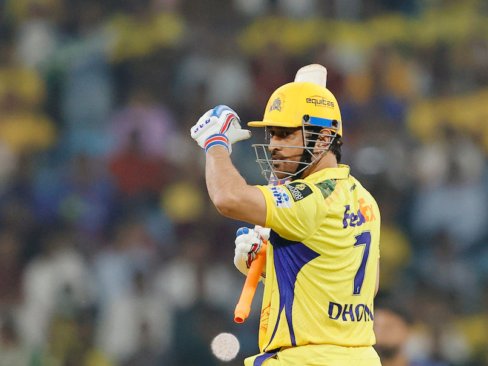

Mahendra Singh Dhoni, born on July 7, 1981, in Ranchi, India, is a legendary cricketer and former captain of the Indian national team, renowned for his calm demeanor and exceptional leadership skills.
MS Dhoni was born in a Hindu Rajput family to Pan Singh and Devaki Devi.
He grew up in Ranchi, where he initially played football as a goalkeeper before transitioning to cricket.
Dhoni attended DAV Jawahar Vidya Mandir, where his cricketing talent was nurtured by his coach, Keshav Banerjee.
He worked as a Travelling Ticket Examiner (TTE) for Indian Railways before fully committing to cricket.